Section 4.1: Scatterplots and Correlation
Learning Objectives
1.Make a scatterplot from data.
2.Describe and interpret relationships between variables using scatterplots.
3.Estimate correlation from scatterplots.
4.Use technology to compute correlation.
5.Determine when correlation is statistically significant.
6.Identify when a linear relationship exists between variables.
Scatterplots
When two variables are related to each other in some way, we say they are associated. For example, Yelp ratings could be associated with Pizza chains, where certain chains tend to get higher Yelp ratings than other chains. If you knew the chain, you might be able to guess the rating for the restaurant. If you know the rating, you might be able to guess the pizza chain. That’s what we mean when we say the variables are related. Knowing one of the variables gives insight into the other variable.
Any two variables may be related, and when they are, we say there is an association. Note that an association may exist between two qualitative variables, one qualitative and one quantitative variable, or between two quantitative variables. In this chapter, we will focus on associations between paired quantitative variables. An association between paired quantitative variables is called a correlation. When we say that two variables are correlated, we are talking about numerical data. Data consisting of paired quantitative variables is called bivariate data.
When we have bivariate data, we think of them as ordered pairs, using the following definition.
Definition 1
Bivariate data consisting of two quantitative variables (also called paired data) can be expressed as ordered pairs . We call the x-value of each pair the “explanatory variable” and the y-value the “response variable”.
We use a scatterplot, or scatter diagram, to visualize the relationship between pairs of data. A scatterplot is a two-dimensional graph containing all the data pairs plotted as points in the cartesian coordinate plane.
Example 1: Making a Scatterplot
The students from section 3.1 example 2 have now taken a second exam in their class. The professor wonders if there is a pattern or trend in the grades. Could she use the exam 1 score to make a prediction about exam 2? Create a scatterplot and interpret the relationship between the grades on exam 1 (the explanatory variable) and on exam 2 (the response variable).
Table 1: Student Exam Scores | ||
|---|---|---|
Name | Exam 1 Score | Exam 2 Score |
Derek | 70 | 81 |
Marshawn | 95 | 87 |
Isabel | 80 | 82 |
Sophia | 83 | 79 |
Juan | 82 | 90 |
Jackson | 10 | 76 |
Carol | 0 | 73 |
Solution:To make a scatterplot, we first need to create horizontal and vertical axes. We use the horizontal axis (we normally think of it as the x-axis) for the exam 1 scores, so it needs to be long enough to include scores from 0 to 95. The vertical axis we normally think of it as the y-axis) will be used for the exam 2 scores, so it will need to be long enough to include grades from 73 to 90.
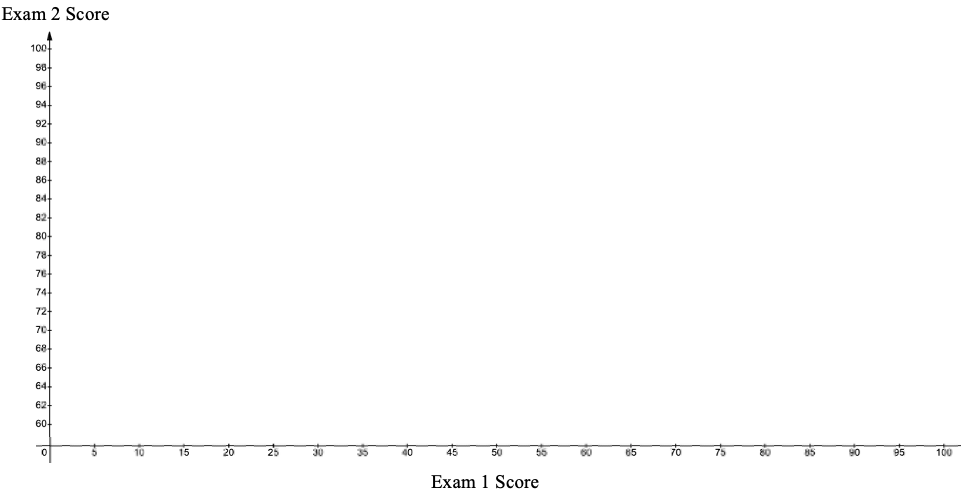
Next, we treat the exam 1 scores as the x-variable, and the exam 2 score as the y-variable to create points to add to the plot.
Table 1: Student Exam Scores | |||
|---|---|---|---|
Name | Exam 1 Score | Exam 2 Score | Point (x, y) |
Derek | 70 | 81 | (70,81) |
Marshawn | 95 | 87 | (95,87) |
Isabel | 80 | 82 | (80,82) |
Sophia | 83 | 79 | (83,79) |
Juan | 82 | 90 | (82,90) |
Jackson | 10 | 76 | (10,76) |
Carol | 0 | 73 | (0,73) |
The first three student scores are for Derek plotted at the point (70,81), Marshawn, plotted at (95,87), and for Isabel, plotted at (80,82). For each, we drew a vertical dashed line at the x-value, and a horizontal dashed line for the y-value. The place where the dashed lines intersect is where we plot the point for that student.
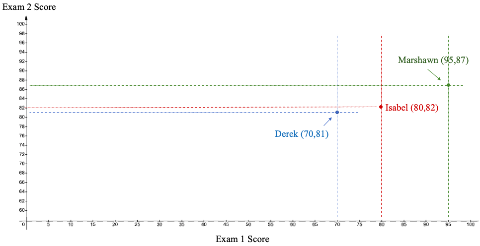
We continue in this way until all the ordered pairs are plotted as points in the scatterplot. See figure 4.2.
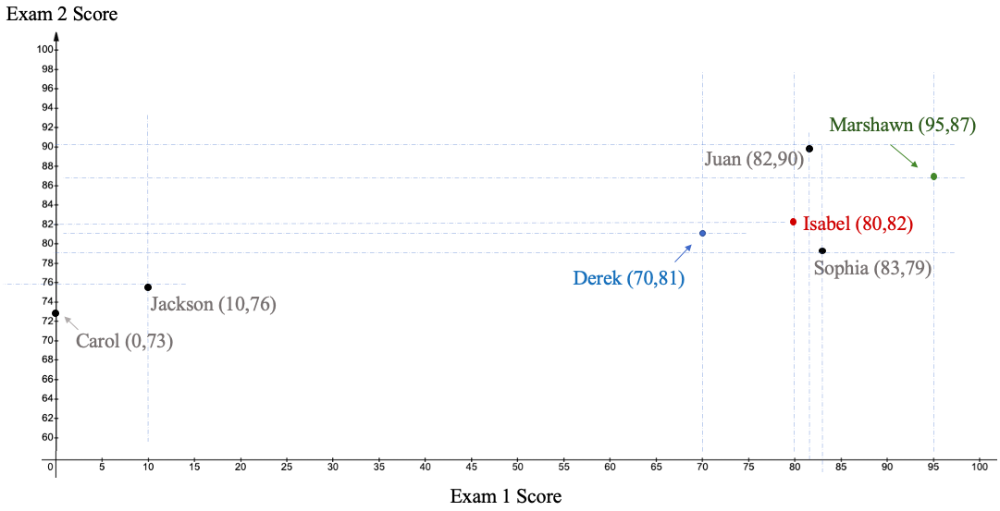
Figure 4.2: Scatterplot of exam scores.
If we remove the dashed lines and student names, we have the complete scatterplot. It appears that students who scored higher on exam 1 also tended to score higher on exam 2. Students who scored lower on exam 1 tended to score lower on exam 2. This is called a positive association between variables. Higher scores on exam 1 are associated with higher scores on exam 2. We will discuss other types of associations shortly.
Of course, drawing a scatterplot using technology is much easier and faster than doing it by hand. In this book we will primarily use STATBELT Utility- the Statistical Basics Exploratory Learning Tool (opens in a new tab), to create our scatterplots. Google Sheets will also make scatterplots.
STATBELT Utility- Making Scatterplots
Open STATBELT Utility and type or paste the data into two columns. Paste the values only, and type a name for each column in its heading.
1.Select Graphs → Scatterplot.
2.Choose the explanatory variable for “Explanatory variable (x)” and the response variable for “Response variable (y).”
3.Click “Open graph in a new window.”
Example 2: Making a Scatterplot using STATBELT Utility
Use the student exam scores in Table 1 to create a scatterplot and interpret the relationship between the grades on exam 1 (the explanatory variable) and on exam 2 (the response variable).
Table 1: Student Exam Scores | ||
|---|---|---|
Name | Exam 1 Score | Exam 2 Score |
Derek | 70 | 81 |
Marshawn | 95 | 87 |
Isabel | 80 | 82 |
Sophia | 83 | 79 |
Juan | 82 | 90 |
Jackson | 10 | 76 |
Carol | 0 | 73 |
Solution:Type or paste the data into two columns of STATBELT Utility. Paste only the numbers, and type “Exam 1 Score” and “Exam 2 Score” in the column headings. Then select Graphs → Scatterplot.
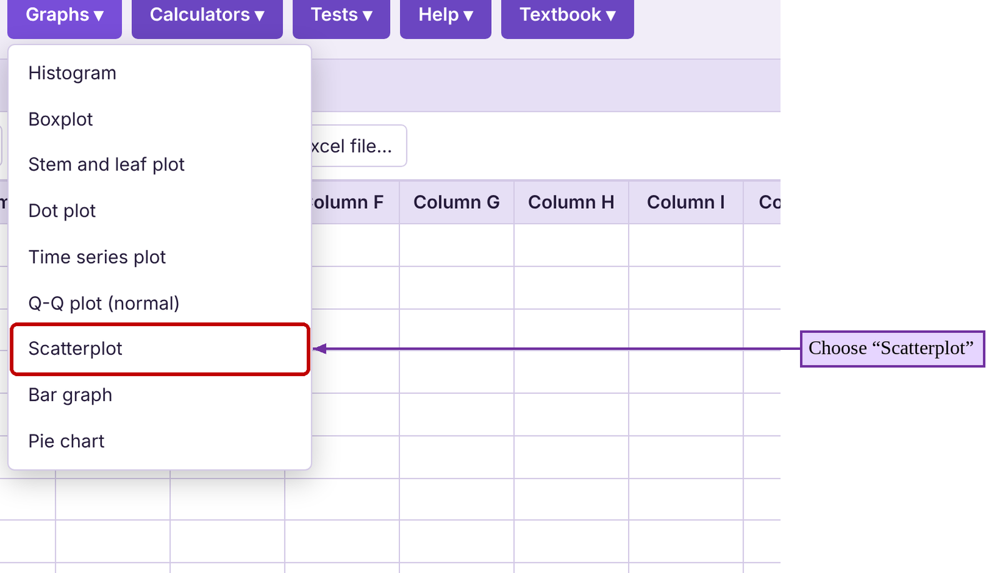
Choose “Exam 1 Score” for “Explanatory variable (x)” and “Exam 2 Score” for “Response variable (y).” Click “Open graph in a new window.” The STATBELT Utility scatterplot is shown in figure 4.3.
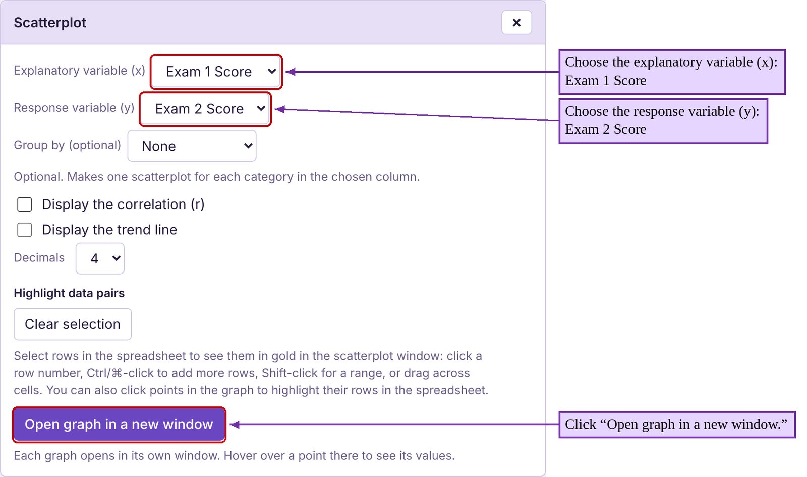
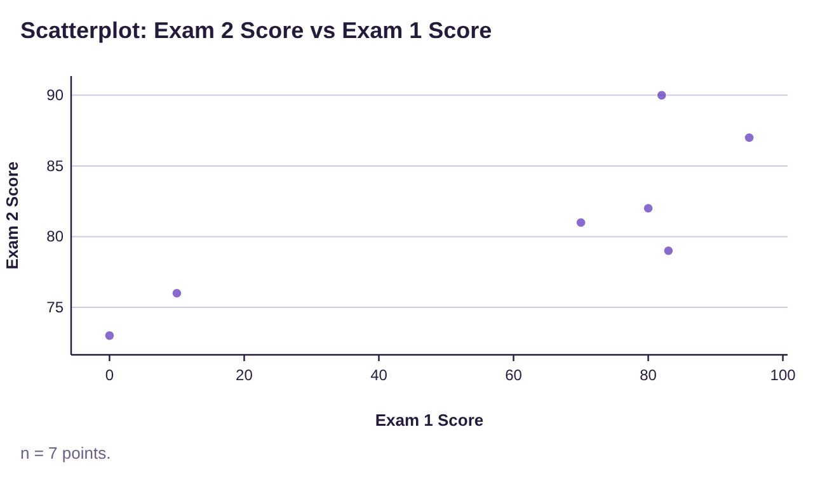
Figure 4.3: Scatterplot of exam scores by STATBELT Utility.
Again, we can see there is a trend. The explanatory variable “Exam 1 Score” gives us a hint as to what the response variable “Exam 2 Score” will be. For example, if a student scored well on the first test, you would tend to think they would score well on the second test. If they did not perform well on the first, it feels more likely that they might do poorly on the second too.
As the last example shows, we can use a scatterplot to view possible correlations between two quantitative variables. Although there are different types of correlations to view, we will look only for linear correlation in this book. Figure 4.4 shows scatterplots for the types of correlations we will see.
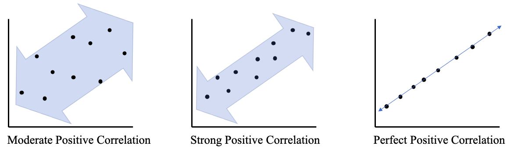
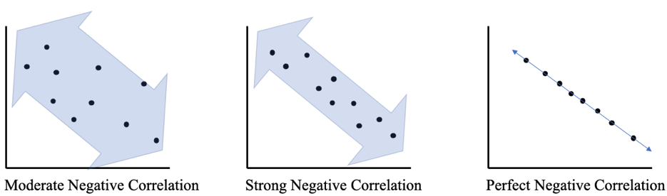
Figure 4.4: Types of Correlation and Scatterplots Chart.
 Tip!
Tip!A positive correlation exists when the data follow a line with a positive slope (rising from left to right). A negative correlation exists when the data follow a line with a negative slope (falling from left to right).
Example 3: Describing Correlation from a Scatterplot
Data was collected from fast food meals from several restaurant chains. Two of the variables were Total Fat in the meal and Protein in the meal. Figure 4.5 is a scatterplot using Total Fat as the explanatory variable and Protein as the response variable. Describe the correlation between the variables.
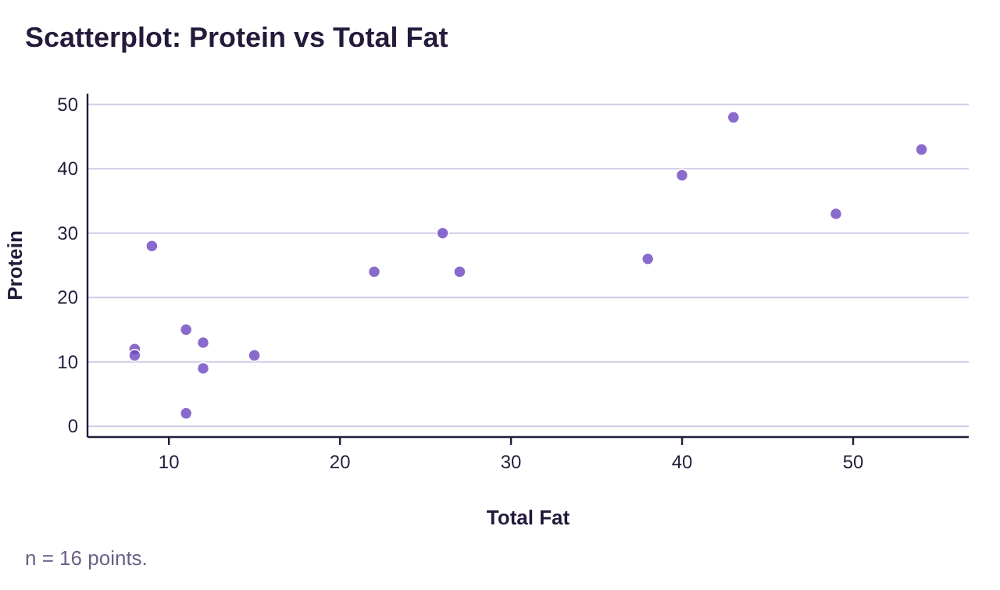
Figure 4.5: Protein vs Total Fat scatterplot for example 3.
Solution:This appears to be a strong positive correlation. Lower amounts of total fat seem to correspond with lower amounts of protein. Higher amounts of total fat appear to correspond to higher amounts of protein. If you were to draw a line through the data that shows the trend, it would have a positive slope. The points would be close to the line, indicating a strong positive correlation.
Important Point!
When we describe correlation between variables, we use the terms weak, moderate, or strong. These descriptions are somewhat subjective!
Example 4: Describing Correlation from a Scatterplot
The scatterplot in figure 4.6 shows data collected from car manufacturers. The explanatory variable is the weight of the car in pounds and the response variable is the gas mileage in Miles Per Gallon (MPG). Describe the correlation between the variables.
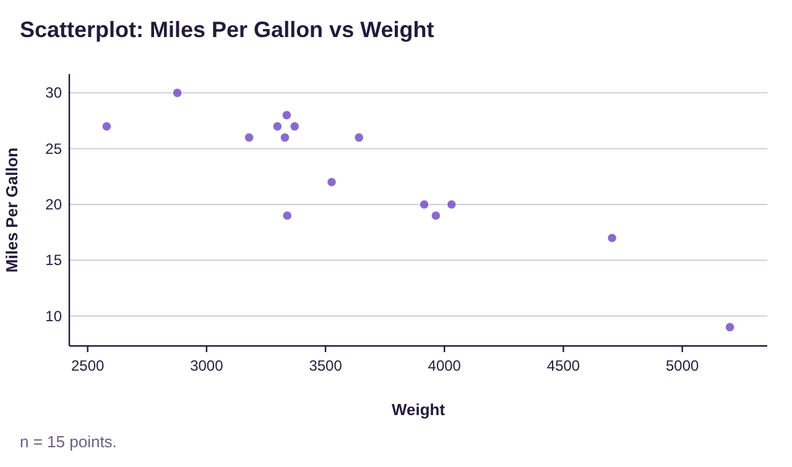
Figure 4.6: MPG vs Weight scatterplot for example 4.
Solution:This appears to be a strong negative correlation. Higher weights seem to correspond to lower gas mileage. Lower car weights appear to correspond to higher gas mileage. If you were to draw a line through the data that shows the trend, it would have a negative slope. The points would be close to the line, indicating a strong negative correlation.
Example 5: Describing Correlation from a Scatterplot
The scatterplot in figure 4.7 shows data collected from heart patients in a clinic. The explanatory variable is the average heart rate in Beats Per Minute (BPM) and the response variable is HDL cholesterol level measured in milligrams per deciliter (Mg/Dl). Describe the correlation between the variables.
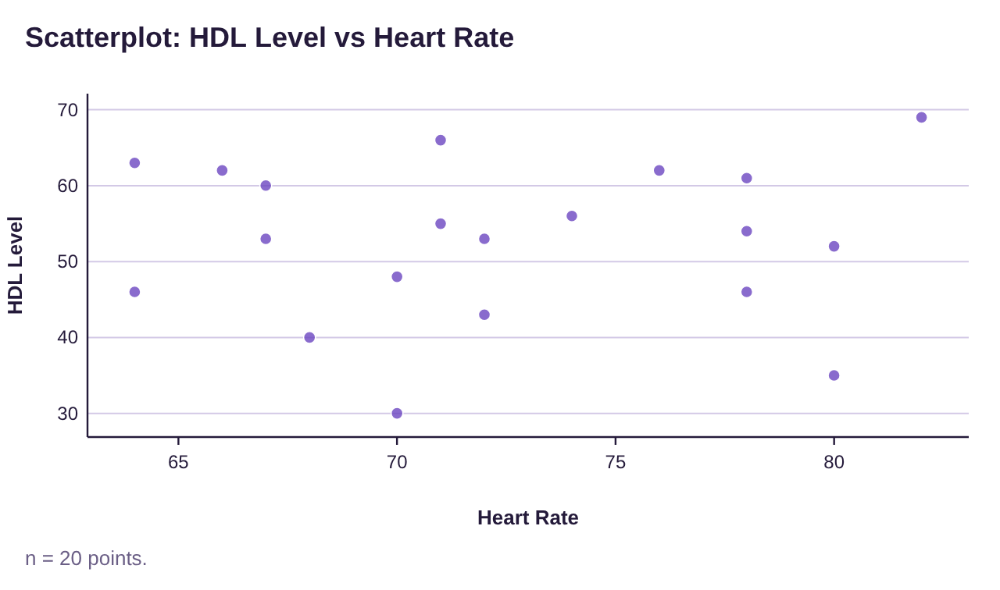
Figure 4.7: HDL cholesterol vs Heart Rate scatterplot for example 5.
Solution:There appears to be no pattern to the data at all. Having a slower or faster heart rate does not appear to have any predictive power in guessing HDL cholesterol. Knowing your cholesterol doesn’t seem to help in predicting heart rate. The data are scattered to all corners of the scatterplot, indicating that there is no correlation between these variables. Heart rate and cholesterol do not appear to be linked.
Computing Correlation as a Statistical Measure
Our next goal is to create a statistic that will measure what we see in a scatter plot. As you have probably guessed, interpreting a correlation as strong, moderate, or weak, or even if there is a correlation, is a subjective endeavor. Differences of opinions are likely to occur. For that reason, we need a numerical way to measure the linearity of the data. In other words, we want to measure “how close to a line are the points in the scatterplot?” Our statistic will need to convey this information.
The formula for linear correlation is very difficult to use by hand. It involves calculating the mean and standard deviations for the x and y variables, then the z-scores for each of the x and y data values, computing the products of the z-scores for each ordered pair, summing those products, and then dividing by one less than the sample size. Yikes! The formula was created by Karl Pearson, and is known as the Pearson Correlation Coefficient, or simply correlation. Although the formula is given, we will use technology to compute correlation in this book.
Definition 2
The linear correlation between two quantitative variables is given by the formula
for a sample of n ordered pairs (x, y). The symbol for linear correlation from a population is (the Greek letter rho). Linear correlation has the following properties:
1.r is always between -1 and +1 inclusive.
2.r = -1 means there is a perfect negative linear correlation.
3.r = +1 means there is a perfect positive linear correlation.
4.The closer r is to -1 or 1, the stronger the linear correlation and the closer to a line the data are. The closer r is to 0, the weaker the linear correlation and the more scattered the data are.
See figure 4.8.
Important Point!
A correlation r = 0 means there is no linear correlation. It does not necessarily mean there is NO correlation. There may be a strong curved pattern like the last graph in figure 4.4 or the one in figure 4.8!
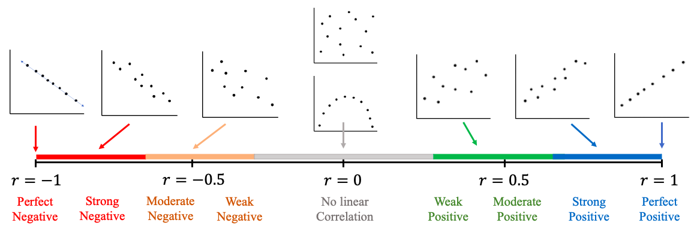
Figure 4.8: Range of correlation from -1 to +1, perfect negative to perfect positive.
Figure 4.8 shows the range of correlation you can expect to find when we calculate it using technology. The image is there to remind you how to interpret the correlation. For example, a correlation of r = -0.21 is close to 0, so it is either a very weak negative correlation or no linear correlation at all. A correlation of r = 0.75 is in the range of a moderate or strong positive linear correlation. The determination of moderate or strong to describe correlation is still subjective. It will also depend on the amount of data that has been collected. The more data you have, the more certain you can be that a correlation does or does not exist.
STATBELT Utility- Computing Linear Correlation
Open STATBELT Utility and type or paste the data into two columns. Type a name for each column in its heading.
1.Select Descriptive Statistics → Correlation.
2.Check the two columns.
3.Click “Show results in a new window.”
Example 6: Computing Correlation
Use the student exam scores in Table 1 to find the linear correlation between the grades on exam 1 (the explanatory variable) and on exam 2 (the response variable).
Table 1: Student Exam Scores | ||
|---|---|---|
Name | Exam 1 Score | Exam 2 Score |
Derek | 70 | 81 |
Marshawn | 95 | 87 |
Isabel | 80 | 82 |
Sophia | 83 | 79 |
Juan | 82 | 90 |
Jackson | 10 | 76 |
Carol | 0 | 73 |
Solution:First, type or paste the data into two columns of STATBELT Utility and name them “Exam 1 Score” and “Exam 2 Score.” You do not need to include the students’ names. Then, select Descriptive Statistics → Correlation. Check “Exam 1 Score” and “Exam 2 Score,” then click “Show results in a new window.” The results are shown in figure 4.9.
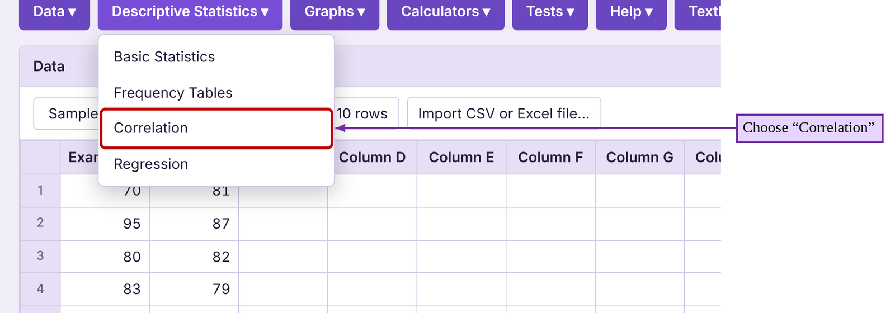
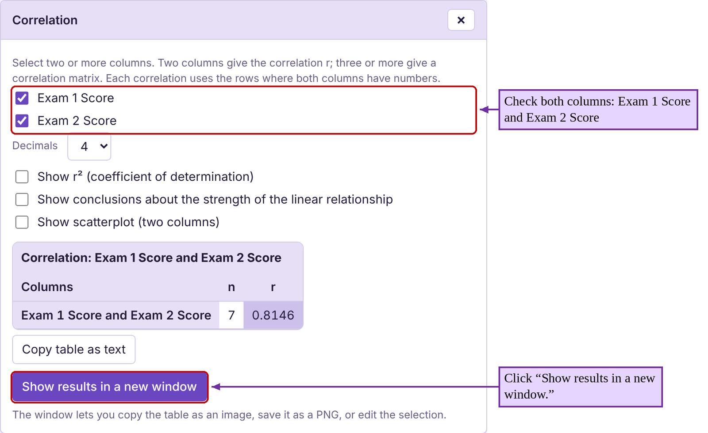
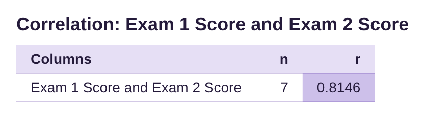
Figure 4.9: Correlation results for example 6.
The result of the correlation is r = 0.815, rounded to three decimal places. Referring to figure 4.8, this correlation is close to 1 and suggests there is a strong positive correlation, agreeing with what we noticed in the scatterplot.
Example 7: Calculating and Interpreting Correlation
The data from fast food restaurant chains used in example 3 is listed in Table 2. Use STATBELT Utility to make a scatterplot and find the correlation between Total Fat in the meal and Protein in the meal. Describe the correlation between the variables. You can copy the Protein vs Fat data (opens in a new tab).
Table 2: Protein vs Fat | |||||||||||||||||
|---|---|---|---|---|---|---|---|---|---|---|---|---|---|---|---|---|---|
Total Fat | 8 | 11 | 27 | 26 | 40 | 43 | 15 | 22 | 9 | 12 | 11 | 8 | 12 | 38 | 49 | 54 | |
Protein | 12 | 15 | 24 | 30 | 39 | 48 | 11 | 24 | 28 | 9 | 2 | 11 | 13 | 26 | 33 | 43 | |
Solution:To make the scatterplot, first type or paste the data into two columns of STATBELT Utility named “Total Fat” and “Protein.” Then select Graphs → Scatterplot, and choose “Total Fat” for “Explanatory variable (x)” and “Protein” for “Response variable (y).” Click “Open graph in a new window.” The scatterplot made by STATBELT Utility is shown in figure 4.10. This is the same scatterplot that was shown in example 3.
To find the correlation, select Descriptive Statistics → Correlation. Then check both “Total Fat” and “Protein,” and click “Show results in a new window.” The correlation results are shown in figure 4.10.
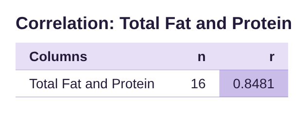
Figure 4.10: Protein vs Total Fat scatterplot and correlation.
The scatterplot shows a positive correlation. The correlation statistic is 0.848, rounded to three decimal places. This is a strong positive correlation. High total fat is strongly correlated to high protein in fast food meals.
Example 8: Describing Correlation from a Scatterplot
The data from example 4 is given in Table 3. Use STATBELT Utility to make a scatterplot using the weight of the car as the explanatory variable (x) and the gas mileage as response variable (y). Find the correlation and describe the relationship between the variables. You can copy the Miles Per Gallon vs Weight data (opens in a new tab).
Table 3: Miles Per Gallon vs Weight | ||
|---|---|---|
Car | Weight | Miles Per Gallon |
69 Chevy truck | 5200 | 9 |
Chevy Camaro | 3339 | 19 |
Dodge Charger | 3964 | 19 |
Dodge Neon | 2580 | 27 |
Ford Escape | 3298 | 27 |
Ford F-150 | 4705 | 17 |
Ford Mustang | 3526 | 22 |
Honda CR-V | 3337 | 28 |
Honda Civic | 2877 | 30 |
Honda Pilot | 4030 | 20 |
Hyundai Tucson | 3329 | 26 |
Mazda 6 | 3179 | 26 |
Subaru Outback | 3641 | 26 |
Toyota Rav4 | 3370 | 27 |
Toyota Tacoma | 3915 | 20 |
Solution:To make the scatterplot, first type or paste the data into two columns of STATBELT Utility named “Weight” and “Miles Per Gallon.” Then select Graphs → Scatterplot, and choose “Weight” for “Explanatory variable (x)” and “Miles Per Gallon” for “Response variable (y).” Click “Open graph in a new window.” The scatterplot made by STATBELT Utility is shown in figure 4.11. This is the same scatterplot that was shown in example 4.
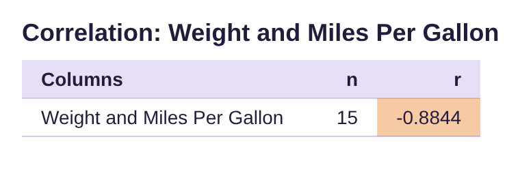
Figure 4.11: Miles Per Gallon vs Weight scatterplot and correlation.
To find the correlation, select Descriptive Statistics → Correlation. Check the columns “Weight” and “Miles Per Gallon,” and click “Show results in a new window.” The STATBELT Utility correlation output is shown in figure 4.11.
In example 4 we described this as a strong negative correlation. The correlation from STATBELT Utility is calculated as r = -0.884. Since this is negative and reasonably close to -1, the statistic agrees with our assessment of the scatterplot. If you want a car with good gas mileage, you will need to choose a lighter car. If you want a heavy car, you will have to sacrifice fuel efficiency.
Example 9: Describing Correlation from a Scatterplot
The data from example 5 includes heart rate and HDL cholesterol levels and is shown in Table 4. Use STATBELT Utility to make a scatterplot using the heart rate as the explanatory variable (x) and HD cholesterol level as response variable (y). Find the correlation and describe the relationship between the variables. You can copy the HDL Level vs Heart Rate data (opens in a new tab).
Table 4: HDL Level vs Heart Rate | |||
|---|---|---|---|
Heart Rate | HDL Level | Heart Rate | HDL Level |
80 | 52 | 78 | 61 |
70 | 48 | 82 | 69 |
80 | 35 | 67 | 60 |
71 | 55 | 66 | 62 |
72 | 53 | 64 | 63 |
78 | 54 | 71 | 66 |
78 | 46 | 72 | 43 |
74 | 56 | 70 | 30 |
67 | 53 | 68 | 40 |
64 | 46 | 76 | 62 |
Solution:We follow the same steps as the preceding examples. To make the scatterplot, first type or paste the data into two columns of STATBELT Utility named “Heart Rate” and “HDL Level.” (Table 4 lists the data in two pairs of columns, so paste the second pair under the first.) Then select Graphs → Scatterplot, and choose “Heart Rate” for “Explanatory variable (x)” and “HDL Level” for “Response variable (y).” Click “Open graph in a new window.” The scatterplot made by STATBELT Utility is shown in figure 4.12. This is the same scatterplot that was shown in example 5.
To find the correlation, select Descriptive Statistics → Correlation. Then check both “Heart Rate” and “HDL Level,” and click “Show results in a new window.” The correlation results are also shown in figure 4.12.
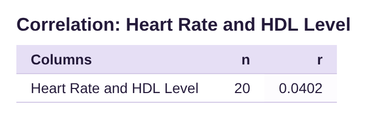
Figure 4.12: HDL cholesterol vs Heart Rate scatterplot and correlation.
In example 5 we observed that there did not appear to be any relationship between heart rate and cholesterol level. The correlation is r = 0.040, which is very close to zero. Correlations that are near zero indicate that there is no linear correlation, which agrees with what we observed in the scatterplot. Based on this data, heart rate and cholesterol do not appear to be linked.
Significant Correlation and Sample Size
At this point, we are interested in identifying when there is a “trend line” in the data that we can use to better understand the variables and make predictions. If the data follow a trend line, we will find an equation for it in section 4.2 and explore its applications in sections 4.2 and 4.3. But first we need to be able to identify and agree on when the data are following a linear pattern.
The next part of our discussion will focus on whether the data pattern is close to a line. Clearly if the correlation is very close to 1 or -1, the data are close to a line. But how close does the correlation have to be to 1 or -1 to conclude the data follow a linear pattern? This is a complicated question that will depend on two factors:
•How close the correlation r is to 1 or -1, and
•How many pairs of data are included in the sample
For a large sample of size a correlation sounds like a moderate correlation. On the other hand, for a small sample of the same correlation doesn’t provide the same level of certainty. Small samples are not as reliable. More data following the trend will make the trend more certain. When there is enough data to support the conclusion that there is a linear relationship between two variables, we say the correlation is statistically significant.
Definition 3
A correlation between two variables is called statistically significant if there is enough sample evidence to conclude that there is a linear relationship between the variables. A statistically significant correlation means that the data follow a trend line in the scatterplot.
We use the following test to determine whether correlation is statistically significant. This is a shortcut to a more advanced topic that is sometimes included with later chapters on inference.
Process- Test for Statistical Significance
To determine if a correlation is statistically significant:
1.Find the correlation r.
2.Determine the number of ordered pairs in the data, n (the sample size).
3.Use the Critical Values Table for Correlation to find the Critical Value (CV) for sample size n.
4.Find the absolute value of the correlation, .
5.If , the correlation is significant. If not, there is no detectable linear relationship between the variables
Table 5: Critical Values Table for Correlation
n | Critical Value | n | Critical Value | |
|---|---|---|---|---|
3 | 0.997 | 27 | 0.381 | |
4 | 0.950 | 28 | 0.374 | |
5 | 0.878 | 29 | 0.367 | |
6 | 0.811 | 30 | 0.361 | |
7 | 0.754 | 31 | 0.355 | |
8 | 0.707 | 32 | 0.349 | |
9 | 0.666 | 33 | 0.344 | |
10 | 0.632 | 34 | 0.339 | |
11 | 0.602 | 35 | 0.334 | |
12 | 0.576 | 36 | 0.329 | |
13 | 0.553 | 37 | 0.325 | |
14 | 0.532 | 38 | 0.320 | |
15 | 0.514 | 39 | 0.316 | |
16 | 0.497 | 40 | 0.312 | |
17 | 0.482 | 41 | 0.308 | |
18 | 0.468 | 42 | 0.304 | |
19 | 0.456 | 43 | 0.301 | |
20 | 0.444 | 44 | 0.297 | |
21 | 0.433 | 45 | 0.294 | |
22 | 0.423 | 46 | 0.291 | |
23 | 0.413 | 47 | 0.288 | |
24 | 0.404 | 48 | 0.285 | |
25 | 0.396 | 49 | 0.282 | |
26 | 0.388 | 50 | 0.279 |
Important Point!
Statistical significance will tell you only whether there is a linear relationship present, not how strong it is. A good analogy is a COVID test. When you test for COVID, a positive test means the antigen is present. It doesn’t tell you how sick you are. A test for statistical significance does not tell us if the linear relationship is weak, moderate, or strong, only if it is detectable by the test.
Example 10: Determining if a correlation is significant
Determine whether each correlation is significant for the sample size specified.
(a) in a sample consisting of data pairs.
(b) in a sample consisting of data pairs.
(c) in a sample consisting of data pairs.
(d) in a sample consisting of data pairs.
Solution:(a)We know and pairs of data. We locate the row for in the correlation table and find the critical value next to it. The critical value is 0.334.
n | Critical Value |
|---|---|
33 | 0.344 |
34 | 0.339 |
35 | 0.334 |
36 | 0.329 |
37 | 0.325 |
Since , . And since , we see that the absolute value of the correlation is larger than the Critical Value, and so we determine that the correlation is significant. The data follow a linear pattern.
(b)We are given and pairs of data. We locate the row for in the correlation table and find the critical value next to it. The critical value is 0.497.
n | Critical Value |
|---|---|
14 | 0.532 |
15 | 0.514 |
16 | 0.497 |
17 | 0.482 |
18 | 0.468 |
Since , . Here . The absolute value of the correlation is NOT larger than the Critical Value, so we determine that the correlation is NOT significant. The data do not follow a linear pattern.
(c)For pairs of data, we locate the row for in the correlation table and find the critical value next to it. The critical value is 0.374.
n | Critical Value |
|---|---|
27 | 0.381 |
28 | 0.374 |
29 | 0.367 |
30 | 0.361 |
Since , . In this example, . The absolute value of the correlation is larger than the Critical Value, indicating that the correlation is significant. The data follow a linear pattern.
(d)For pairs of data, we locate the row for in the correlation table and find the critical value next to it. The critical value is 0.878.
n | Critical Value |
|---|---|
3 | 0.997 |
4 | 0.950 |
5 | 0.878 |
6 | 0.811 |
Since , . Here the absolute value of the correlation is NOT larger than the Critical Value. In symbols, , so we determine that the correlation is NOT significant. The data do not follow a linear pattern.
Note that in part (d), the correlation is not significant, even though is close to -1. Compare that to part (a) where the correlation was considered significant with , which is not as close to 1 as -0.871 is to -1. You might think that the correlation in part (d) is stronger, but that is not the case. Part (a) has much more evidence of a linear relationship because it has many more data pairs. If we want to find evidence of a linear relationship in part (d), we need to collect more data. The threshold to establish linearity decreases as the number of data pairs increases.
Putting it all Together
Finally, we will return to the first four examples of this section to interpret the data using scatterplots, correlation, and significance.
Example 11: Putting it all Together
The student exam scores in Table 1 were given in example 1. Determine whether the Exam 1 and Exam 2 scores follow a linear pattern.
Table 1: Student Exam Scores | ||
|---|---|---|
Name | Exam 1 Score | Exam 2 Score |
Derek | 70 | 81 |
Marshawn | 95 | 87 |
Isabel | 80 | 82 |
Sophia | 83 | 79 |
Juan | 82 | 90 |
Jackson | 10 | 76 |
Carol | 0 | 73 |
Solution:In examples 1, 2, and 6 we created the following scatterplot and computed the correlation shown in figure 4.13. There were only n = 7 students, so the critical value is CV = 0.754. The correlation is , and so the correlation is significant. The scatterplot appeared to show a moderate positive correlation and now we have verified that the data do indeed follow a linear pattern.
Figure 4.13: Exam 1 and 2 scores scatterplot and correlation.
Example 12: Putting it all Together
The data from fast food restaurant chains used in examples 3 and 7 is listed in Table 2. Determine whether there is a linear relationship between Total Fat and Protein in fast food meals. You can copy the Protein vs Fat data (opens in a new tab).
Table 2: Protein vs Fat | |||||||||||||||||
|---|---|---|---|---|---|---|---|---|---|---|---|---|---|---|---|---|---|
Total Fat | 8 | 11 | 27 | 26 | 40 | 43 | 15 | 22 | 9 | 12 | 11 | 8 | 12 | 38 | 49 | 54 | |
Protein | 12 | 15 | 24 | 30 | 39 | 48 | 11 | 24 | 28 | 9 | 2 | 11 | 13 | 26 | 33 | 43 | |
Solution:In example 3 and 7 we created the scatterplot and calculated the correlation as seen in figure 4.14.
Figure 4.14: Protein vs Total Fat scatterplot and correlation.
Based on the scatter plot, it appears that total fat and protein are positively correlated. Computing the correlation using STATBELT Utility, we obtained , which is a strong positive correlation (it is close to 1).
In this data set, there are n = 16 ordered pairs (the same as the number of points in the scatterplot). The critical value for n = 16 is CV = 0.497. Since , we determine that the correlation is significant. The data follow a linear pattern. In fact, based on the value of r being close to 1, we would say there is a moderate to strong positive linear correlation.
Example 13: Putting it all Together
The data from example 4 is given in Table 3. Determine whether there is a linear relationship between the weight of a car and the gas mileage. You can copy the Miles Per Gallon vs Weight data (opens in a new tab).
Photo by Cayton Heath (opens in a new tab) on Unsplash (opens in a new tab)
Table 3: Miles Per Gallon vs Weight | ||
|---|---|---|
Car | Weight | Miles Per Gallon |
69 Chevy truck | 5200 | 9 |
Chevy Camaro | 3339 | 19 |
Dodge Charger | 3964 | 19 |
Dodge Neon | 2580 | 27 |
Ford Escape | 3298 | 27 |
Ford F-150 | 4705 | 17 |
Ford Mustang | 3526 | 22 |
Honda CR-V | 3337 | 28 |
Honda Civic | 2877 | 30 |
Honda Pilot | 4030 | 20 |
Hyundai Tucson | 3329 | 26 |
Mazda 6 | 3179 | 26 |
Subaru Outback | 3641 | 26 |
Toyota Rav4 | 3370 | 27 |
Toyota Tacoma | 3915 | 20 |
Solution:We created the scatterplot and calculated correlation in examples 4 and 8, with the results below in figure 4.15.
Figure 4.15: Miles Per Gallon vs Weight scatterplot and correlation.
The scatter plot shows a negative correlation between the weight of a car and the gas mileage it gets (the data go down from left to right). STATBELT Utility confirms our suspicion. The correlation is
, which is close to -1.
This sample had pairs of data, so the critical value is 0.514. Since
, we determine that the correlation is significant. The data follow a linear pattern. In fact, based on the value of r being close to -1, we would say there is a strong negative linear correlation.
Example 14: Putting it all Together
The data from examples 5 and 9 include heart rate and HDL cholesterol levels and is shown in Table 4. Determine whether there is a linear relationship between Heart Rate and HDL Cholesterol level. You can copy the HDL Level vs Heart Rate data (opens in a new tab).
Table 4: HDL Level vs Heart Rate | |||
|---|---|---|---|
Heart Rate | HDL Level | Heart Rate | HDL Level |
80 | 52 | 78 | 61 |
70 | 48 | 82 | 69 |
80 | 35 | 67 | 60 |
71 | 55 | 66 | 62 |
72 | 53 | 64 | 63 |
78 | 54 | 71 | 66 |
78 | 46 | 72 | 43 |
74 | 56 | 70 | 30 |
67 | 53 | 68 | 40 |
64 | 46 | 76 | 62 |
Solution:We created the scatterplot and calculated correlation in examples 5 and 9, with the results below in figure 4.16.
Figure 4.16: HDL cholesterol vs Heart Rate scatterplot and correlation.
Since this correlation is which is very close to 0, we suspect that there is no linear relationship.
This sample had pairs of data, so the critical value is 0.444. Since is NOT greater than the critical value 0.444, we determine that the correlation is NOT significant. The data do not follow a linear pattern, which supports the visual evidence we see in the scatter plot.
Correlation and Causation
When a correlation exists between two quantitative variables, we know that they are related. However, we must be careful not to assume that one factor is causing the other. For example, we can show that the unemployment rates for Black and White Americans from 1990 to 2020 is positively correlated with . That means that when the unemployment rate for one group is high, so is the other. When unemployment is lower for one it tends to be lower for the other. It does NOT mean that one of the unemployment rates is causing the other. There are underlying factors in the economy, or lurking variables, that are causing both to rise and fall together. See figure 4.17.
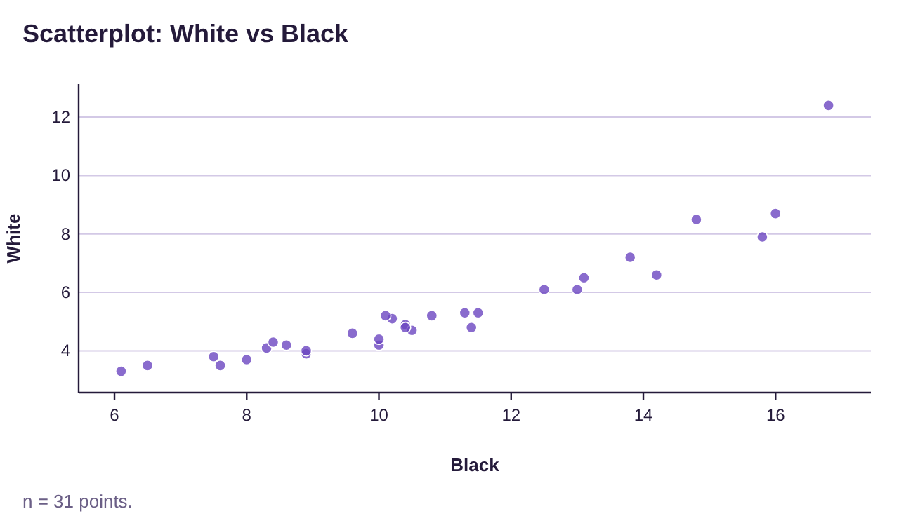
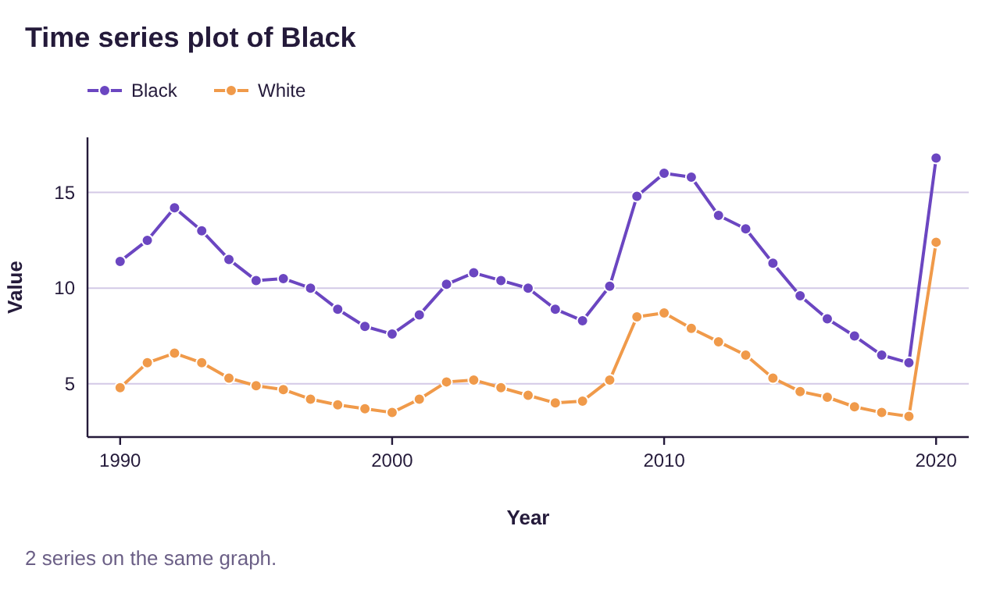
Figure 4.17: Scatterplot and time-series plot for Black and White Unemployment Rates 1990-2020.
Important Point!
Correlation does not establish a cause-and-effect relationship! Correlation is NOT Causation!
Examples 15 and 16: Spurious Correlations
The website spurious correlations (opens in a new tab), operated by Tyler Vigen, contains many correlated quantitative variables that are humorously unrelated. The following are two examples. (Image credit: Tyler Vigen, Spurious Correlations (opens in a new tab), Creative Commons License 4.0 (opens in a new tab))
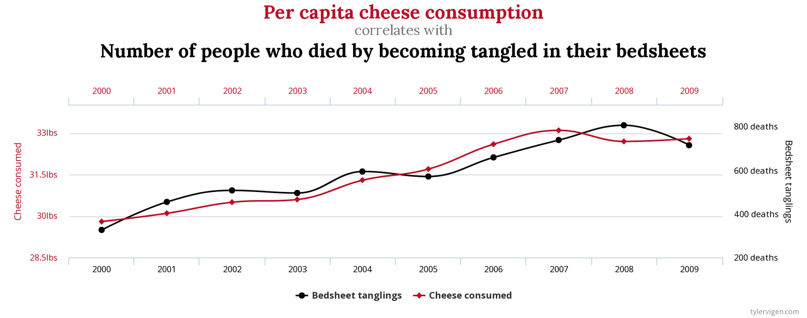
Sources: U.S. Department of Agriculture and Center for Disease Control & Prevention
Photo by Waldemar Brandt (opens in a new tab) on Unsplash (opens in a new tab)
Photo by Ryan Kwok (opens in a new tab) on Unsplash (opens in a new tab)
It seems clear that bedsheet tangling deaths do not cause cheese consumption to increase, and that increasing cheese consumption does not cause more widespread bedsheet related death. These are likely correlated due to some underlying factor, or just plain luck. It could be an odd coincidence that as cheese consumption increased, there were more deaths due to odd circumstances, like bedsheet tangling. Whatever the reason, both were rising from 2000 to 2009. But neither caused the other to increase!
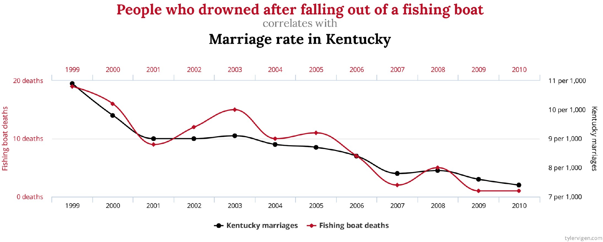
Sources: National Vital Statistics Reports and Center for Disease Control & Prevention
We aren’t even going to try to explain this graph. Please just remember that correlation does not imply causation!
Photo by Ben Rosett (opens in a new tab) on Unsplash (opens in a new tab)
Photo by Gene Gallin (opens in a new tab) on Unsplash (opens in a new tab)